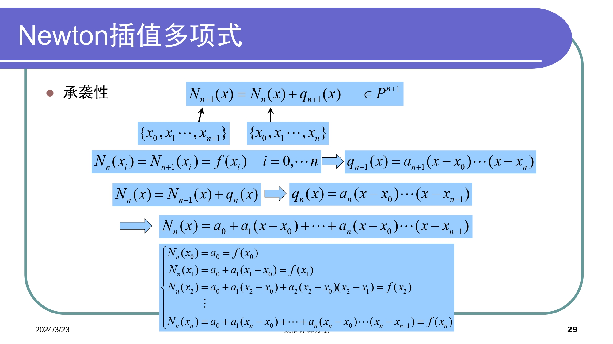
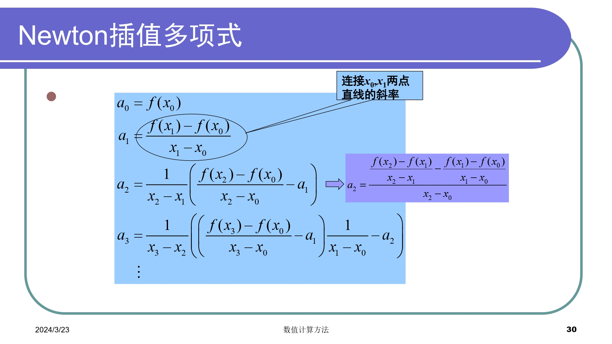
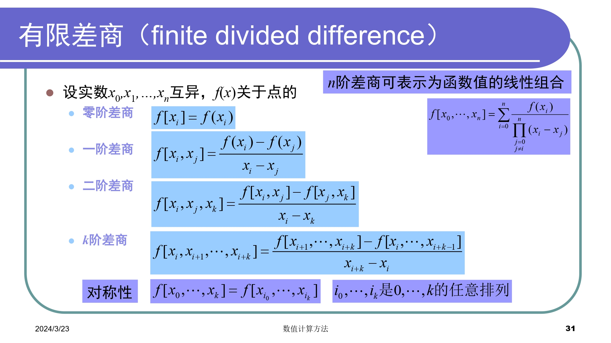
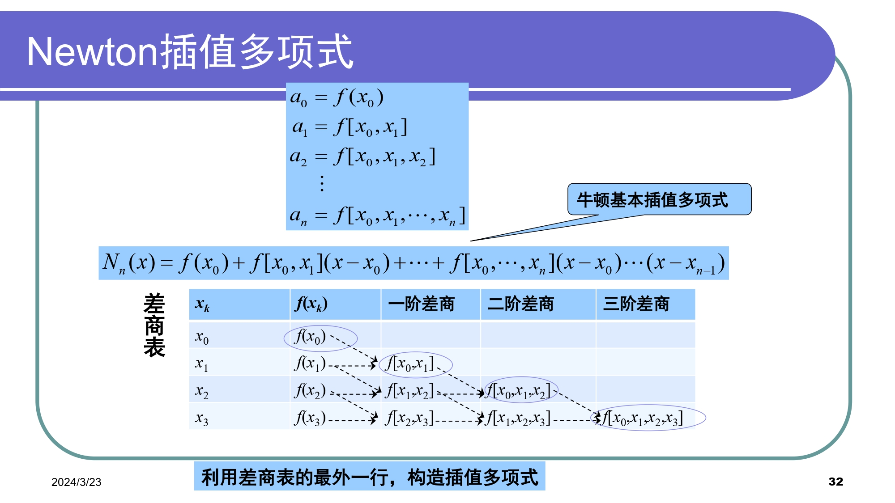
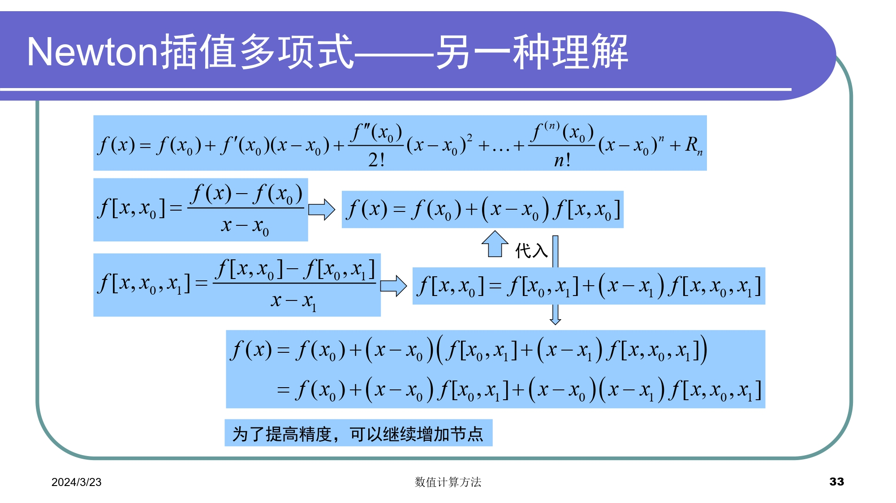
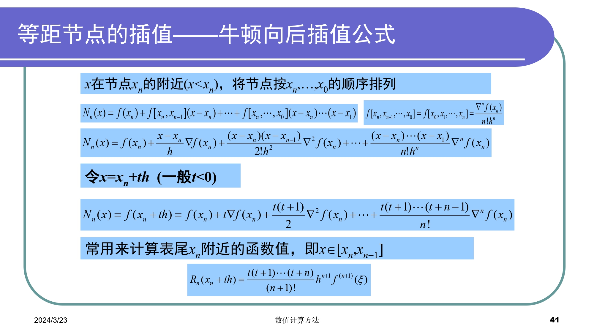
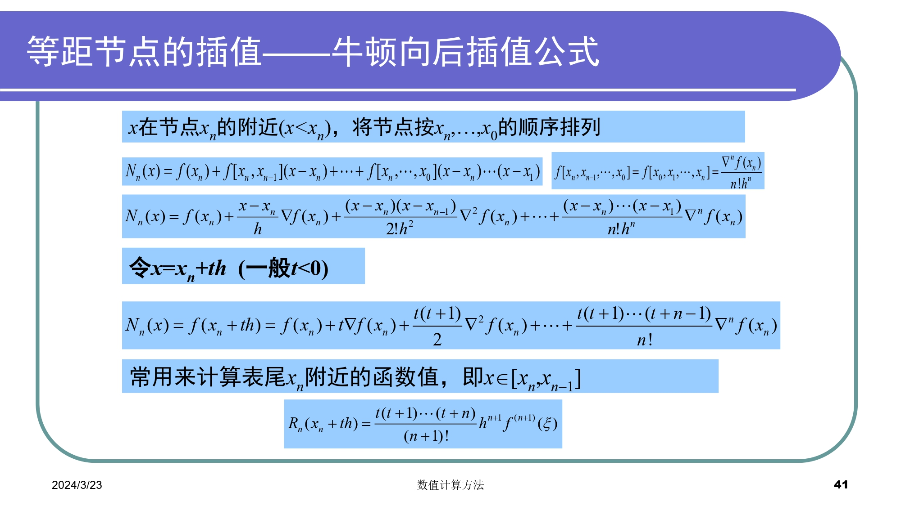

Numerical Methods Note
Chapter0 Matlab
官方文档
文件操作
- 开始/结束命令行日志命令：diary lab01.txt / diary off
- 清空命令行命令：clc
- 删除日志命令：delete("diary.txt")
- 切换文件路径：cd D:\workspace\matlab
- 一个文件一般只有一个同名函数
基本语法
- 语句加上分号可以隐藏输出
- 块注释：%{ %}
- 数组的索引从1开始
- 函数调用可以使用feval
- :运算符可以创建向量
数学函数
- 保留小数位数
- roundn(n,-p) %注意负号
- format short %控制显示
- fprintf %美化输出
- 求根
- fzero %单函数求根
- roots %求多项式的根
- 多项式
- poly %用已知的根构建多项式
- polyval %求多项式的值
- polyvalm %求带有矩阵变量的多项式的值
- 矩阵
- cond %计算矩阵条件数
- norm %计算矩阵或向量的范数
- inv %矩阵求逆
- pinv %求矩阵伪逆
- det %计算行列式的值
- rank %求秩
- eig eigs %矩阵特征值
- lu %LU分解
- chol %cholesky分解
- 插值与拟合
- polyfit %多项式最小二乘拟合
- interp1 %一维插值(查表)
- interp1q %快速一维线性插值
- interp2 %二维插值
- interpn %n维插值
- spline,csape %三次样条插值
- ppval %分段多项式估计函数
- 绘图
- plot %生成图形
- legend %标识各条线
- hold on %将绘图添加到现有图形中
- figure %打开新的图窗，并将其作为当前图窗
- clf reset %清空图窗
- grid on %启用网格线
- grid off %禁用网格线
- 杂项
- len %获取数组或向量的长度，即元素数量
- size %返回数组或矩阵的维度信息
- tic %开始计时
- toc %结束及时
- linspace %生成指定区间等间距数组
矩阵与向量
% 1.读取所有行与列
a
a(:,:)
% 2.读取前i行，前j列
a(1:i,1:j)
% 3.读取第i行，第j列
a(i,j)
% 4.读取所有行，第j列；第i行，所有列
a(:,j)
a(i,:)
% 5.读取某几行的某几列
a([i1,i2..ip],[j1,j2..jq])
Error List
警告: 冒号操作数必须为实数标量
Chapter1 绪论
数学模型
用数学语言来表达物理系统或过程本质特征的公式或方程。 + 因变量=f(自变量，参数，强制函数) + 因变量：用来刻画系统行为或状态的特征量 + 自变量：通常为维度，如时间和空间，系统的行为是用自变量来确定的 + 参数：反映系统的性质或组成 + 强制函数：外部对系统施加的影响。
数值方法特点
- 稳定性
- 准确性与精确性
- 收敛速度
误差种类的来源
- 数值误差：包括舍入误差和截断误差
- 舍入误差：由于计算机只能表示有限位数的量
- 截断误差：由于数值方法可能运用近似方法表示准确数值运算或数量
- 不与数值方法直接相关的误差：如粗差、形式化或模型误差、数据不确定性误差

有效数字
为了正式规定数值的有效程度

判断有效数字位数的方法

舍入误差
- 数的计算机表示
- 计算机中的算术运算
数的计算机表示


计算机中的算术运算
造成误差的原因
- 通用算术运算
- 有效数字丢失
- 主要体现在尾数的调整
- 大规模计算
- 舍入误差的累积效应
- 大数和小数相加
- 如无穷级数求和
- 减性抵销
- 两个几乎相等的浮点数所引起的舍入误差
- 如二次求根公式
- 变换公式或扩展精度
- 拖尾效应
- 求和过程中，某一项的值大于和值本身
- 在符号交替的级数中会出现
- 内积
- 使用扩展精度
截断误差
- 多项式数值计算的近似
- 误差与步长的n+1次方成比例
误差传播
- 函数导数的绝对值较大
- 初始误差可稳定传播或不稳定传播
算法的数值稳定性

总结


作业分析
Q2则遇到小麻烦。保留两位小数时输出为负（而且负得离谱），但积分结果肯定为正。思考后，增加了值为保留小数位数的变量。在matlab运行日志中可以看到，当保留小数位数达到10位时，才能得到相对准确的计算结果。
对于这种数值较小的运算，0.01的误差累积起来也会造成相当程度的偏差。更确切地说，是由于导数绝对值较大造成的误差传播。解决问题时，必须要根据数据大小选定相应的精度或者选择方法进行优化。
PS：正在施工中，等整理结束后会导出为pdf
Chapter2 非线性方程求根
应用方向
- 求解代数方程和超越方程的实数根
- 根的分离(预先给出根的一个粗略位置)
- 近似根的精确化(向真实根逼近)
- 求解多项式的所有实数根和复数根
收敛阶

划界法
二分法
取左右端点中点
%二分法
function [c,err,yc]=bisect(f,a,b,delta)
ya=feval(f,a);
yb=feval(f,b);
if ya*yb>0
disp('Note: f(a)*f(b)>0')
return
end
max_times=1+round((log(b-a)-log(delta))/log(2));
for k=1:max_times
c=(a+b)/2;
yc=feval(f,c);
if yc==0
a=c;
b=c;
elseif yb*yc>0
b=c;
yb=yc;
else
a=c;
ya=yc;
end
if b-a<delta
break
end
end
c=(a+b)/2;
err=abs(b-a)/2;
yc=feval(f,c);

试位法
取左右端点连成直线与X轴的交点
%试位法
function [c,err,yc]=regula(f,a,b,delta,epsilon,max1)
ya=feval(f,a);
yb=feval(f,b);
if ya*yb>0
disp('Note: f(a)*f(b)>0')
return
end
for k=1:max1
dx=yb*(b-a)/(yb-ya); %dx为c,b之间的距离
c=b-dx;
ac=c-a; %ac为a,c之间的距离
yc=feval(f,c);
if yc==0
break
elseif yb*yc>0
b=c;
yb=yc;
else
a=c;
ya=yc;
end
dx=min(abs(dx),ac);
if abs(dx)<delta
break
end
if abs(yc)<epsilon
break
end
c=b-yb*(b-a)/(yb-ya);
err=abs(b-a);
yc=feval(f,c);
end


开方法
不动点迭代
取接近满足f(x)=x不动点的点
%不动点迭代
function [k,p,err,P]=fixpt(g,p0,delta,max1)
P(1)=p0;
for k=2:max1
P(k)=feval(g,P(k-1));
err=abs(P(k)-P(k-1));
relerr=err/(abs(P(k))+eps);
p=P(k);
if (err<delta) || (relerr<delta)
break
end
if k==max1
disp('maximum number of iteration exceeded')
end
end
Newton-Raphson方法
取某点切线与x轴的交点(等价于g(x)=x-f(x)/f'(x)不动点)
%Newton-Raphson方法
function [p0,err,k,y]=newton(f,df,p0,delta,epsilon,max_times)
for k=1:max_times
p1=p0-feval(f,p0)/feval(df,p0);
err=abs(p1-p0);
relerr=2*err/(abs(p1)+delta);
p0=p1;
y=feval(f,p0);
if (err<delta) || (relerr<delta) || (abs(y)<epsilon)
break
end
end


割线法
取同侧端点连成直线与x轴交点
%割线法
function [p1,err,k,y]=secant(f,p0,p1,delta,epsilon,max_times)
for k=1:max_times
p2=p1-feval(f,p1)*(p1-p0)/(feval(f,p1)-feval(f,p0));
err=abs(p2-p1)
relerr=2*err/(abs(p2)+delta);
p0=p1;
p1=p2;
y=feval(f,p1);
if (err<delta || (relerr<delta) || abs(y)<epsilon)
break
end
end
if k==max_times
disp('maximum number of iteration exceeded')
end
针对重根的改进

总结延伸
扩展
- 方法的改进
- 非线性方程组求根
- 多项式求根
总结

作业分析
求解较小根
- 试位法
- 相比二分法引入了纵向容差
- 不动点迭代
- 引入相对误差，有助于确保解达到所需精度迭代停止
- 同时，导数绝对值必须<=1,才能收敛(在本题中就发散)
- 由于不动点是满足g(x)=x的点，故要记得变换函数g(x)=f(x)+x,并确保导数值<1(弄了半天)
- Newton-Raphson方法
- 需要导函数
求解较大根
- 改了一些参数竟然warning,于是根据错误信息在chapter0增加了error list(待施工)
- 问题主要在右端点,把2/pi-eps改成50*pi/101就好了，很好奇什么原理
- Newton算出来是错的，数值远比答案大，说明发散
Chapter3 线性代数方程组
系数矩阵类型
- 低阶稠密矩阵
- 大型稀疏矩阵(矩阵中0元素较多)
- 三对角矩阵(非0元素集中于主对角线及相邻两对角线上)
数值解法

高斯消去法

病态方程组判别
- 行列式的值
- 矩阵求逆
- 缩放系数矩阵，使每一行最大元素为1，缩放后的逆矩阵元素值大于1数倍则为病态
- 将逆矩阵与原矩阵相乘，结果不接近单位阵则为病态
- 求逆矩阵的逆矩阵，与原系数矩阵对比，不相等则为病态
- 系数微小改变再求解
解求精技术
- 使用扩展精度
- 选主元 列主元消去法 全主元消去法
- 缩放 缩放之后的系数用来确定是否需要交换主元，但实际消去和回代中仍使用原系数值
消去法
- 顺序消去法条件苛刻，且数值不稳定
- 全主元消去法工作量偏大，需要比较的元素及行列交换工作较多，算法复杂
- 高斯约当消去法形式上简单，且无回代求解，但计算量大
- 从算法优化的角度考虑，列主元消去法较好
function X=Gauss(A,B) %采用高斯消去法 n=length(B); for i=1:n-1 %寻找该列绝对值最大的元素 max=abs(A(i,i)); mark=i; for j=i+1:n if (abs(A(i,j)) > max) max=abs(A(i,j)); mark=j; end end %交换行 l=A(i,:); A(i,:)=A(mark,:); A(mark,:)=l; c=B(i); B(i)=B(mark); B(mark)=c; %顺序消元 %消去 for j=i+1:n %对第j行进行操作 factor=A(j,i)/A(i,i); for k=i+1:n %对第k个进行操作 A(j,k)=A(j,k)-factor*A(i,k); end B(j)=B(j)-factor*B(i); end end %回代 X(n)=B(n)/A(n,n) for i=n-1:-1:1 sum=B(i); for j=i+1:n sum=sum-A(i,j)*X(j); end X(i)=sum/A(i,i); end end
LU分解、特殊矩阵和矩阵求逆
三角分解(LU分解)
LU分解矩阵求逆可减少计算量
Doolittle分解
- L为单位下三角矩阵，U为上三角矩阵
Crout分解
- L为下三角矩阵，U为单位上三角矩阵
三角分解和高斯消去的比较
- 计算量相当
- 三角分解不必计算中间结果，不需要提前知道右端项
- 解相同系数矩阵方程相当方便
Cholesky分解
对称正定矩阵的平方根法 + 由Doolittle分解，A有唯一分解$A=LU$ + LDR分解：(L、R分别为下、上三角矩阵，D为对角矩阵) + 三角分解：$A=LDL^T$ + 优势：存储量小，计算量小，数值稳定 + 缺点：存在开方运算，可能会出现根号下复数
带状方程组
- 高斯消去或LU分解效率低
- 元素满足对角占优条件，可以证明A非奇异，且各阶顺序主子式都采用三对角方程组的追赶法(Thomas算法)
Thomas算法
- 分解计算公式：$A=LU$
- 求解方程组 $Ly=f$ 的递推算式
- 求解方程组 $Ux=y$ 的递推算式
function X=Thomas(A,B) %采用三对角方程组的追赶法 n=length(B); %crout分解 L=eye(n); U=zeros(n); for i=1:n %计算U矩阵的第i行 U(i,i:n)=A(i,i:n)-L(i, 1:i-1)*U(1:i-1,i:n); %计算L矩阵的第i+1列到第n列 for j=i+1:n L(j,i)=(A(j,i)-L(j,1:i-1)*U(1:i-1,i))/U(i,i); end end %求解方程组Ly=f Y=zeros(1,n); Y(1)=B(1)/A(1,1); for i=2:n Y(i)=(B(i)-A(i,i-1)*Y(i-1))/(A(i,i)-A(i,i-1)*U(i,i-1)); end %求解方程组Ux=y X(n)=Y(n); for i=n-1:-1:1 X(i)=Y(i)-X(i+1)*U(i,i+1); end end
误差分析、条件数
向量和矩阵的范数
向量范数
满足条件：正定，齐次，三角不等式 + "2"范数(欧几里得范数) $$ ||x||2=(\sum\limits{i=1}^{n}x_i^{2})^{1/2} $$ + "1"范数 $$ ||x||1=\sum\limits{i=1}^{n}|x_i| $$ + "∞"范数(极大值范数或一致向量范数) $$ ||x||∞=\mathop{\max{1\leq{i}\leq{n}}^{}}{|x_i|} $$ + "p"范数 $$ ||x||p=(\sum\limits{i=1}^{n}|x_i|^{p})^{1/p} $$
矩阵范数
满足条件：正定，齐次，三角不等式，矩阵乘法不等式(相容性条件) + "2"范数(谱范数) $$ ||A||2=[\lambda{max}A^TA]^{1/2} $$ + "1"范数(列和范数) $$ ||A||1=\max\limits{1\leq{j}\leq{n}}\sum\limits_{i=1}^{n}|a_{ij}| $$ + "∞"范数(行和范数) $$ ||A||∞=\max{1\leq{i}\leq{n}}\sum_{j=1}^n|a_{ij}| $$
谱半径
- A的所有特征值的集合称为谱
- 称$\rho(A)=\max\limits_{1\leq{i}\leq{n}}|\lambda_i|$
- $||A||$为$A$的任意一种范数，有$\rho{(A)}\leq{||A||}$
病态方程组和矩阵条件数
相对误差直接与A的条件数相关


迭代方法
迭代法


雅可比迭代法(同步迭代法)

高斯-赛德尔方法(异步迭代法)

收敛性


逐次超松弛迭代法(SOR)


作业分析
- Report已上传到我的学习笔记,课程即将结束时会做一次总的修订，并将作业分析独立出来(矩阵打起来是真的花时间)
- 题目理解起来难度比较大，一开始认为只要不断迭代求解就行(实际上也是)，所以没想到应用线性方程组。但后来发现可以归为带状方程组，于是分别采用高斯消去法和Thomas算法(题目没描述好，我最初没注意到$x_i$和$y_i$有关系)
- 比较麻烦的是第一级和最后一级改写方程，所以写循环的时候还要判断一下
- 快敲完代码的时候才想到可以直接调用函数
Chapter4 插值和拟合
插值
概览
插值函数
- 代数多项式
- 有理函数
- 有理插值可使区间内插值误差分布均匀，适用于某些被插函数具有无穷间断点的附近
- 三角函数
插值函数存在唯一定理

插值多项式存在唯一性
 ##### 插值余项
##### 插值余项

插值余项误差
- 插值多项式仅与已知数据有关，与$f(x)$原来形式无关，但余项与$f(x)$
- 若$f(x)$本身是一个不超过n次多项式，则$P_{n}(x)=f(x)$
- 对于多项式插值，增加阶数不一定能提高精度(一般推荐3j个节点的插值)
- 插值点$x$不能位于插值区间之外的远处
Lagrange插值多项式

缺点
- 无承袭性：增加一个节点，所有的基函数都要重新计算
Newton插值多项式
    
等距节点的插值
数据在空间上间距相等 - 步长 $x_0<...<x_n$,其中$x_i-x_{i-1}=h$,$x_i=x_0+ih$,h被称作步长 - 有限差分 - $\Deltaf(x)=f(x+h)-f(x)$ 一阶向前差分 - $\nablaf(x)=f(x)-f(x-h)$ 一阶向后差分 - $\deltaf(x)=f(x+h/2)-f(x-h/2)$ 一阶中心差分 - $\Delta$ 前差算子 $\nabla$ 后差算子 $\delta$ 中差算子
Newton向前插值公式
 

Hermite插值多项式

Runge现象
插值多项式次数越高： 1. 计算量大 2. 在部分区间(两端)激烈振荡，截断误差/计算余项偏大
插值误差
- 截断误差是插值的收敛性问题，Runge现象
- 舍入误差是插值的稳定性稳定
- 为避免Runge和不稳定，一般限定n<7
- n较大时采用分段低次插值、样条插值、次数较低的最小二乘逼近
分段低次插值
优点
- 公式简单，只要区间充分小，就能保证误差要求
- 局部性质良好，修改某个节点，只影响相邻的两个区间
缺点
- 不能保证节点处插值函数的导数连续，因而不能满足某些工程曲线光滑性的要求
样条插值


 ##### 三弯矩法
##### 三弯矩法


逆插值
- 交换变量
- 横坐标在空间分布的不均匀性会导致插值多项式产生振荡(即使是低阶多项式)
- 利用初始数据进行插值，得到插值多项式后，寻找对应的$x$值，相当于方程求根
拟合
求出一个经验公式，使各数据点从总体上最贴近，而不一定要求构造的函数曲线通过所给数据点
最小二乘方法

基本环节
- 确定$\varphi(x)$的形式
- 求最小二乘解
解法


代数多项式拟合


总结
- 相同点
- 从函数角度看，插值法与最小二乘法都是根据函数表求函数的近似表达式的问题，属于函数逼近问题
- 从几何上看，二者都是根据一列数据点求曲线的近似曲线问题，是曲线拟合问题
- 不同点
- 插值法根据插值条件选择近似函数
- 最小二乘法根据“偏差平方和最小”原则选择近似函数